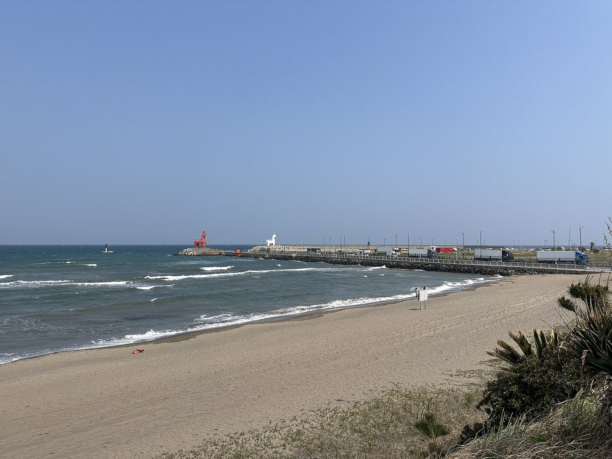

DAY 1 · 11/22 (일)
도착하자마자 바다로
이호테우 해변 · 첫 수영 · 알작지 노을- 김해공항 출발06:15까지 공항 도착 · 08:15 제주 도착
- H호텔에 짐 맡기기공항에서 택시 약 15분 (6.9km)
- 1아침자매국수택시 약 10분 (3.1km) · 고기국수 · 원격 줄서기
- 2이호테우 해변 · 말 등대걸어서 13분 (1.0km) · 빨간·하얀 말 등대
- 3점심바다사랑채식당해변 따라 걸어서 17분 (1.3km) · 한식
- 4니모메 카페택시 약 5분 (1.9km) · 호텔에서 걸어서 5분 거리
- H체크인 → 옥상 온수풀
- 5알작지 해변 노을걸어서 18분 (1.4km) · 해는 17:25쯤 져요(추정)
- 6저녁노도고등어회택시 약 15분 (5.2km) · 무지개해안도로 끝
- H호텔 → 야간 온수풀택시 약 15분 (6.0km) · 수영장 22시까지